String

Tipps and tricks
multiple input()
Multiple Input With Map Function

String recap
String
- Represen text
- Surrounded by quotes
- Color = 'blue'
- Color = "blue"
Using Quotes within Strings
sentence = " Hello my name's Aektawan "
sentence = 'My favorite snack is "Lay" '
double = "He said, \"That 's a great tasting watermalon! \" "
single = 'He said, "That\'s a great tasting watermalon! " '
String And Printing

String Indexing

String Are Immutable
In Python, strings are immutable, which means that once they are created, they cannot be changed. Some operations, such as concatenation, give the impression that they modify strings, but in reality they do not.

String slicing
String Slicing Example
name = 'Elon Musk'
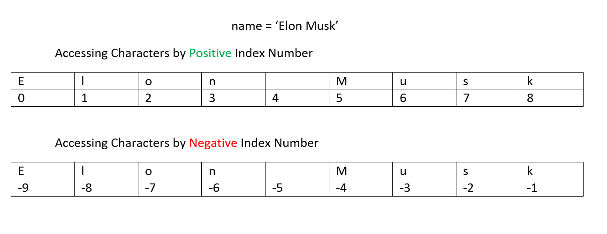name[Start:Stop:Stride] *** Stride is How many character to move forward ***

String function len()
The len() Function
Nesting Function

Basic string methods lower(), upper(), format()
Pseudocode
In computer science, pseudocode is a plain language description of the steps in an algorithm or another system. Pseudocode often uses structural conventions of a normal programming language, but is intended for human reading rather than machine reading. It typically omits details that are essential for machine understanding of the algorithm, such as variable declarations and language-specific code. The programming language is augmented with natural language description details, where convenient, or with compact mathematical notation. The purpose of using pseudocode is that it is easier for people to understand than conventional programming language code, and that it is an efficient and environment-independent description of the key principles of an algorithm. It is commonly used in textbooks and scientific publications to document algorithms and in planning of software and other algorithms.
FlowChart
A flowchart is a type of diagram that represents a workflow or process. A flowchart can also be defined as a diagrammatic representation of an algorithm, a step-by-step approach to solving a task. The flowchart shows the steps as boxes of various kinds, and their order by connecting the boxes with arrows. This diagrammatic representation illustrates a solution model to a given problem. Flowcharts are used in analyzing, designing, documenting or managing a process or program in various fields.
How FlowChart important?
Flow charts are an important tool for the improvement of processes. By providing a graphical representation, they help project teams to identify the different elements of a process and understand the interrelationships among the various steps.

FlowChart Symbol
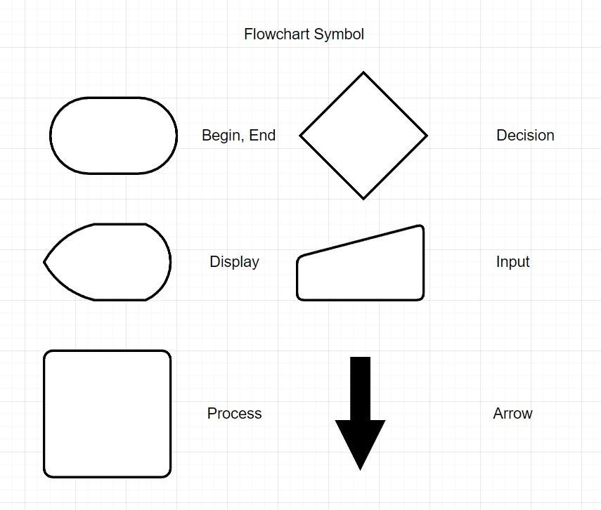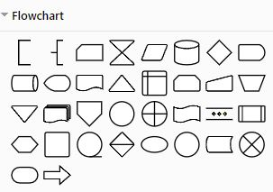
IPO or input process output
Computer programs typically perform the following three-step process:
- Input is received.
- Some process is performed on the input.
- Outputis produced.

variables
Variable are: Storage location that have a name, Name-value pairs
Valid Variable Names
1.Case sensitive.
2.Must start with a letter.
3.Underscores allowed in variable names.
4.Not allowed: + -
Reserved Words
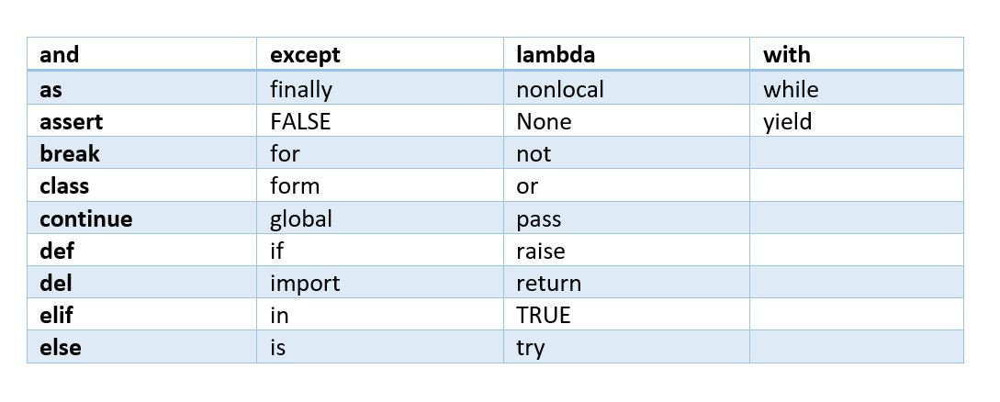Reserved incorrect
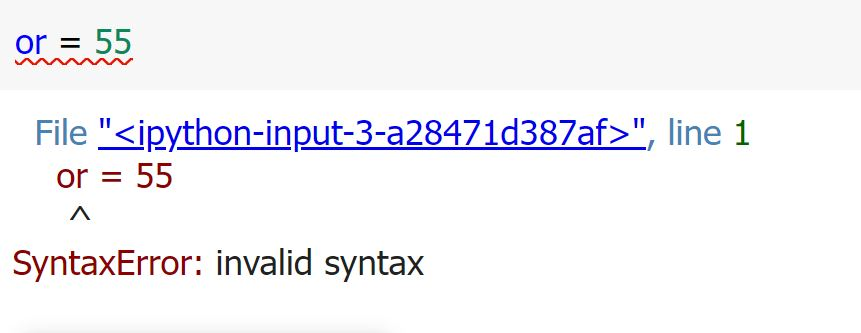Valid Variable Names
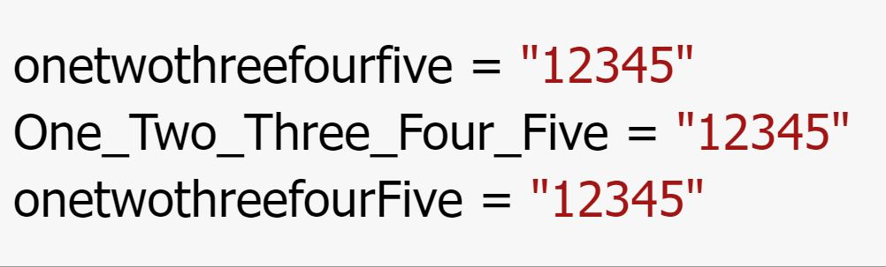data type
Numeric Integer
Basic Data Types
- Numeric
- Integer
- Floating point
- Boolean
- String
Composite Data Types (Later lessons)
- List
- Tuple
- Dictionary
- Set
number
Use numbers directly in your source code

Incorrect to use Numbers

Correct to use Numbers
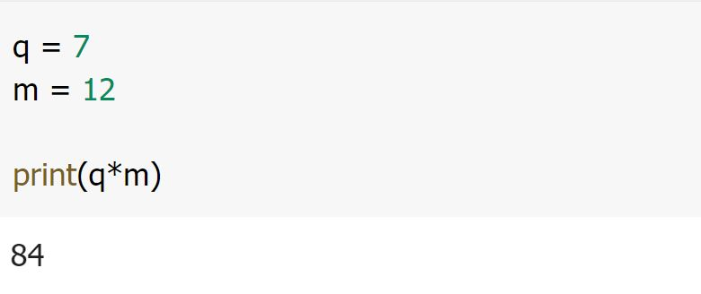boolean
A Boolean variable can reference one of two values: True or False. Boolean variables are commonly used as flags
, which indicate whether specific conditions exist.
Hungry = True
Sleepy = False

String
- Represent text
- Surrounded by quotes
*** Strings are start with ' or " and end with ' or "

Python operators
What are operators in python?
Operators are special symbols in Python that carry out arithmetic or logical computation. The value that the operator operates on is called the operand.
Expression Operator And Operand

Arithmetic Operators

Example

Operator Precedence
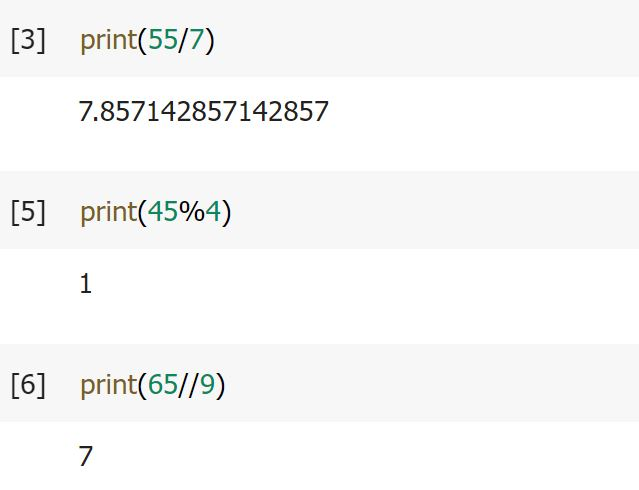
Comparison Operators
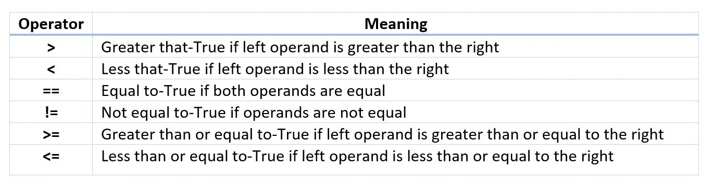Example

Logical Operators

Example

Bitwise Operators

Assignment Operators
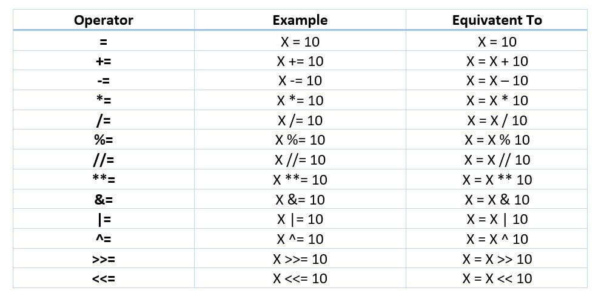Identity Operators
is and is not are the identity operators in Python. They are used to check if two values (or variables) are located on the same part of the memory. Two variables that are equal does not imply that they are identical.
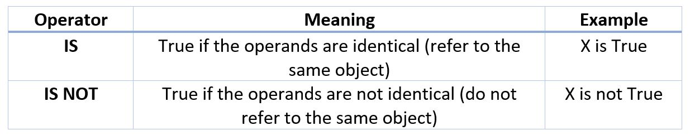Example

Membership operators
in and not are the membership operators in Python. They are used to test whether a value or variable is found in a sequence (string, list, tuple, set and dictionary).
In a dictionary we can only test for presence of key, not the value.

Example
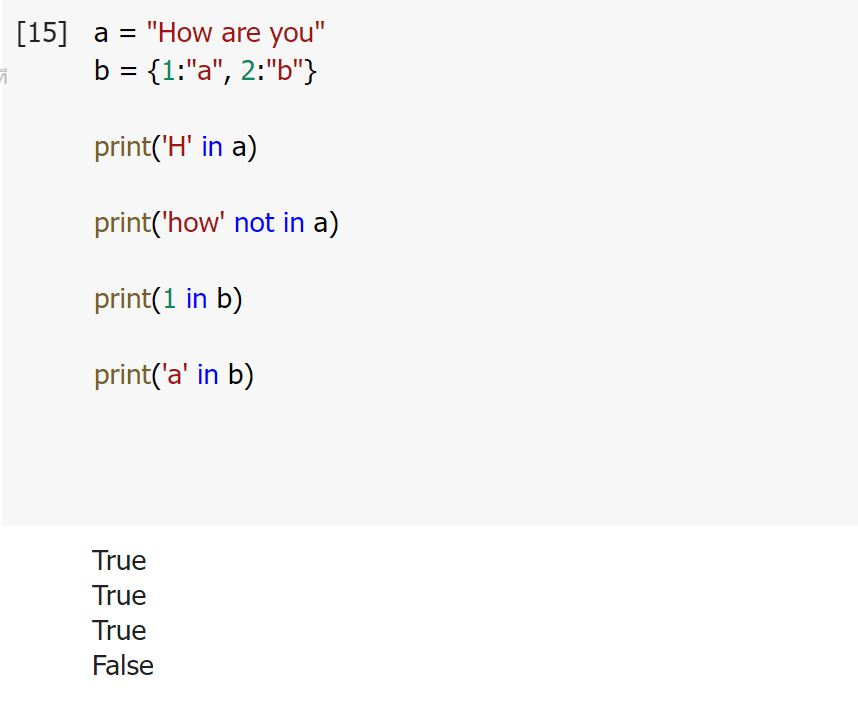input
Input()
input (): This function first takes the input from the user and converts it into a string. The type of the returned object always will be
variable = input(promt)
name input('What is your name? ')

Input Number
We will see how to take integer input in Python. As we know that Python’s built-in input() function always returns a str(string) class object. So for taking integer input we have to type cast those inputs into integers by using Python built-in int() function.Example
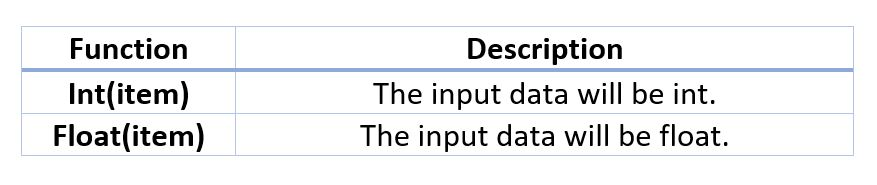Medhod
1. string_value = input('How many hours did you play games? '
hour = int(string_value)
2. hours = int(input("How many hours did you play games? '))
Example

Read Multiple Values From Keyboard
Example
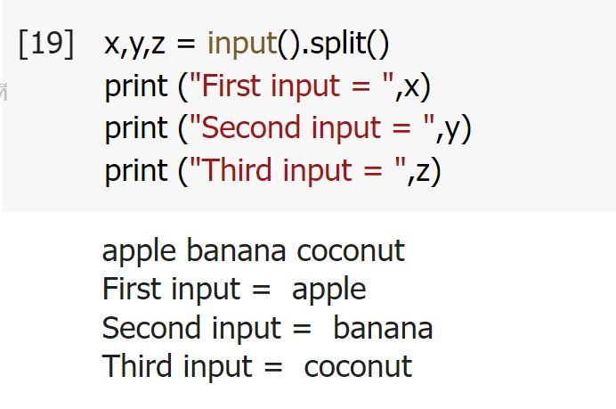comments
Comments in Python is the inclusion of short descriptions along with the code to increase its readability. A developer uses them to write his or her thought process while writing the code. It explains the basic logic behind why a particular line of code was written. They are just meant for the coders themselves or other developers to understand a piece of code, especially since the Python interpreter completely ignores comments in Python. You can see this in the following example.
*** Messages that use # in front will not be taken into account in the program. ***
Use # put in front
Example